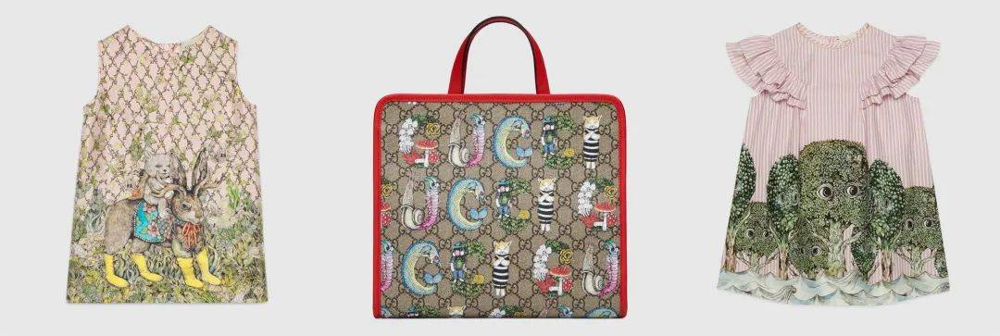
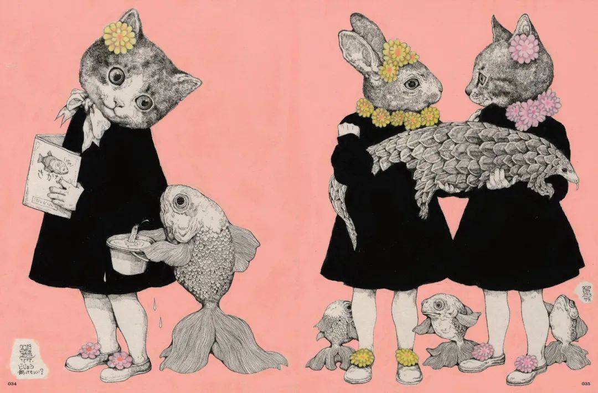
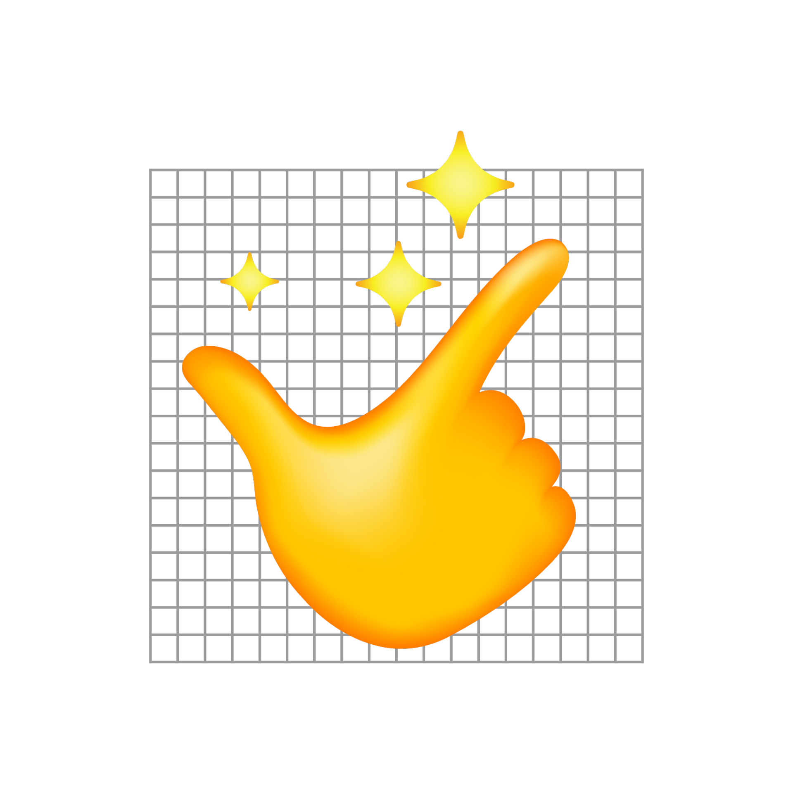
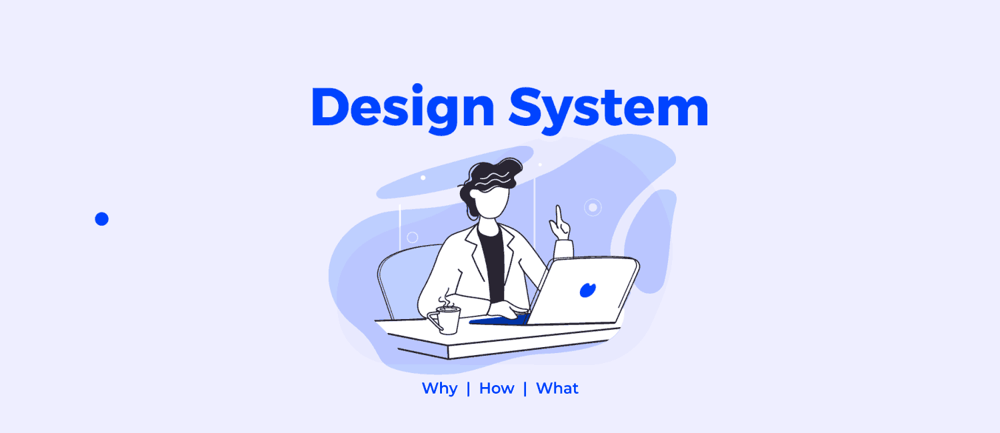

设计周刊 Design Weekly #05
Thu, Apr 30, 2020
🏷 设计亮点：
被 GUCCI 选中的日本另类插画家，作品真是“怪”好看！
http://www.shejipi.com/358338.html
天马星空的创意，还有奇幻的笔触，日本插画师樋口裕子与 GUCCI 联手打造了一个令人眼前一亮的童装系列。 一起来看看这位插画师的创造的梦幻世界~
GUCCI 官方文案：# 日安，看见你真好 #
你好你好
经历了不可思议的奇幻之旅
我们都有点不一样了


🏷 设计资源：
设计师们，请下载并灵活使用这套 emoji
https://www.topys.cn/article/30359.html
&Walsh的创意总监酷女孩杰西卡·沃什（Jessica Walsh）发布了一套设计师专用emoji，个个实用又好用。这套表情也并非是给设计师专用，我相信每个人都能用得上~

🏷 设计文章
Design System！Why | How | What
https://medium.muz.li/design-system-why-how-and-what-dbf3943e7629
通过设计系统灵活设计产品产品。从 Material Design 到 Atom Design（将复杂组件分解为原子），很多企业都构建了自己的设计系统。
- Why：企业需要保持一致体验的同时快速构建和迭代产品；
- How：整理理解现有组件，分解为原子，持续改进；
- What：可重复使用的组件集合；

🏷 设计新闻
数字插画的 5 大设计趋势
https://icons8.com/articles/digital-illustration-trends/
著名图标网站 Icons8 发布了 2020 年数字插画 5 大设计趋势：
- 夸张视觉
- 几何图案
- 线条艺术
- 有限色彩
- 3D 插画